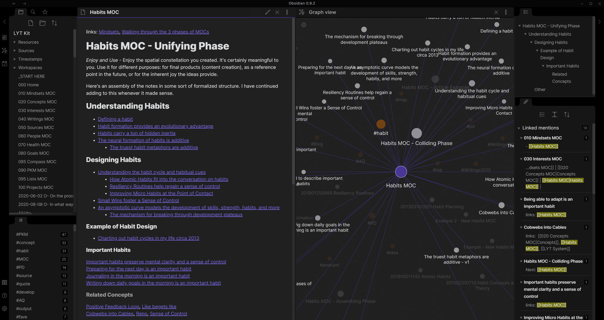

Introducing and using Obsidian

I recently stumbled across an open source app I never heard of before: Obsidian
Its an app for writing and organizing markdown text documents. While this does not sound like much, it changed my work life a lot and gave me such a positive impact that I wrote this post to share the app with you.
My struggle with taking notes
I read and learned about the art of note-taking before. I know that some sophisticated people keep huge collections of notes, thoughts and pieces of wisdom - for example in systems like the Zettelkasten which as already used by Jules Verne. I also read a story about a businessman some time ago who made a note with details about every person he ever met so he can look them up again when he would meet them again, sometimes after years.
While I always kept a classic note book in paper form near me, I only rarely used it. I am a very digital person - always working on lots of projects. Either for my employee or for myself. A note book is a linear medium. You fill page by page untill there is no more space. But my thoughts wander around. I sketch out an idea halfway through, then work on something else. Or I add more information to some topic later on. Thats difficult with a book. I always tried to leave some pages blank between unrelated topics, but it always gave me a feeling of limited space to express my thoughts. Also its not searchable. And not linkable. And I can't use it in the dark.
What makes obsidian valuable for me
- The obsidian app is being installed on your device - be it a Windows, Mac or Linux desktop or an Android or iOS device - it works anywhere.
- It creates a local folder with text files in it. Completely offline and completely yours. No cloud used, no account needed.
- The texts can be formatted with markdown - complete with links and images.
- You can go ahead and add or edit the text files in the folder with any other text editor.
- It formats code blocks with beautiful syntax highlighting.
- It can export your formatted texts as PDFs.
- Writing texts in dark mode on my mobile is pure bliss.
On steroids with device sync
The app itself offers a paid sync feature for $4/mo (as the time of this writing). Since the app writes plain text to a folder on your device, you get some other options tough.
I went ahead with [Syncthing], an open source file sync tool for Windows, MacOS, Linux and Android. Since it also works without a cloud or an account, it was the perfect solution for me. Apps like Dropbox or Google Drive dont sync a folder on your mobile and dont work in this case.
Setting it up on android was a bit tricky because of the security constraints but I eventually figured out how to make it work: the "Documents" Folder on my android device can be read/write accessed by any app with permission, so I set the Obsidian Vault location there. I then shared the vault folder through syncthing with my laptop.
Now, whenever I take notes on my mobile, I can pick them up on my laptop. Or when I write down extensive research on my laptop, I can browse and search it on my mobile when I'm on the run.
And since everything is markdown based, I even wrote this blog post in Obsidian. What a great and truly open piece of software!
I just started using obsidian in my everyday work and it already had a big impact on my workflow. I strongly suggest you to give it a try.